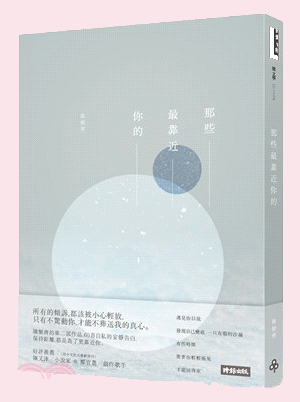
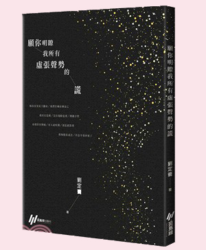

三民書局線上書展

我在讀詩時
策展主題說明 策展團隊介紹 線上主題書展 三民書局
1.陳繁齊 2.任明信 3.劉定騫

還是想提醒你/天要變得更涼了/城市也會縮成一團吧/生活將會更壅塞但/我們仍然不會遇見-陳繁齊 <那些最靠近你的> 當你的海/就不在意你沒有岸-任明信 <光天化日> 如果人生本就荒謬如夢/你已是我見過/最美的海市蜃樓-劉定騫 <願你明瞭我所有虛張聲勢的謊> 有很多事的價值並不建立在實用之上，每個人都有屬於自己讀詩的理由。 為情，為惑，為生活。 如果可以，我還希望我們能不要把日子填得那麼滿，那麼匆忙。希望我們能偶爾靜下來，想想那些生命中真正美好的時光，留一點時間給回憶、留一點時間給想念，留一點時間給白日夢或者小塗鴉。 期許我們都不會成為不斷對著故障販賣機投錢的人。
阿燁，00s，喜歡冬天和有妳在的夢，竹東人，聯合大學。 阿弘，電競選手，大家總推測他喜歡男生，但很可惜的是他有女朋友了。 東哥哥，號稱亞大扛霸子，一言不和就請各位吃慶記，十分兇猛，但也是位喜歡讀詩的大男孩。
| 阿燁 | 阿弘 | 東哥哥 |